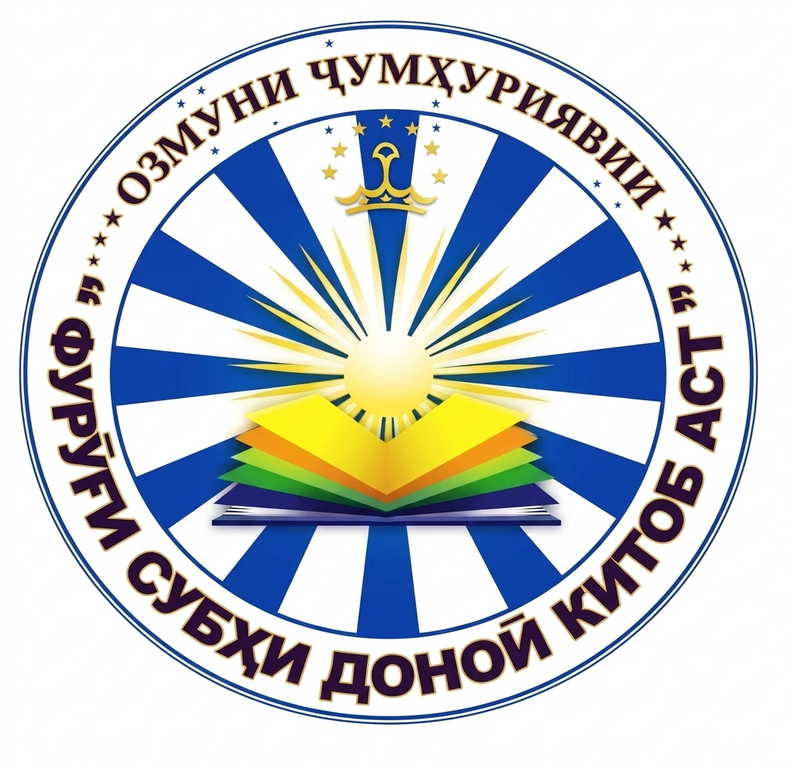

Замимаи 2 ба амри Президенти Ҷумҳурии Тоҷикистон
аз «2» январи соли 2025, №АП-709
Раёсати комиссия:
Аъзои комиссия:
Замимаи 3 ба амри Президенти Ҷумҳурии Тоҷикистон
аз «2» январи соли 2025, №АП-709
Дар ҳар як гурӯҳи ҳар як номинатсия 6 ҷоизагир — ҷойи якум (1), дуюм (2), сеюм (3) — бо маблағи умумии 290 000 сомонӣ муқаррар шудааст:
| № | Ҷой | Маблағ | Шумора | Ҳамагӣ (сомонӣ) |
|---|---|---|---|---|
| 1 | Якум | 70 000 | 1 | 70 000 |
| 2 | Дуюм | 50 000 | 2 | 100 000 |
| 3 | Сеюм | 40 000 | 3 | 120 000 |
| Ҳамагӣ (як гурӯҳ) | 6 | 290 000 | ||
| № | Номинатсия | Маблағ | Шумора | Ҳамагӣ (сомонӣ) |
|---|---|---|---|---|
| 1 | 🧒 Адабиёти кӯдакону наврасон ва осори шифоҳӣ | 140 000 | 1 | 140 000 |
| 2 | 📜 Адабиёти классикии тоҷик | 140 000 | 1 | 140 000 |
| 3 | ✍️ Адабиёти муосири тоҷик | 140 000 | 1 | 140 000 |
| 4 | 🌍 Адабиёти ҷаҳон | 140 000 | 1 | 140 000 |
| Ҳамагӣ | 4 | 560 000 | ||
| № | Ҷой | Маблағ | Шумора | Ҳамагӣ (сомонӣ) |
|---|---|---|---|---|
| 1 | Якум | 70 000 | 15 | 1 050 000 |
| 2 | Дуюм | 50 000 | 30 | 1 500 000 |
| 3 | Сеюм | 40 000 | 45 | 1 800 000 |
| 4 | 🏆 Шоҳҷоиза | 140 000 | 4 | 560 000 |
| Ҳамагӣ | 94 | 4 910 000 | ||
Омӯзгороне, ки шогирдонашон дар Озмун ҷойҳои 1, 2, 3 ва Шоҳҷоизаро мегиранд
| № | Ҷой | Маблағ | Шумора | Ҳамагӣ (сомонӣ) |
|---|---|---|---|---|
| 1 | Якум, дуюм, сеюм | 20 000 | 54 | 1 080 000 |
| 2 | 🏆 Шоҳҷоиза | 20 000 | 4 | 80 000 |
| Ҳамагӣ | 58 | 1 160 000 | ||
| № | Хароҷот | Маблағ (сомонӣ) |
|---|---|---|
| 1 | Омода кардани ҷомҳои Шоҳҷоиза, ҷойҳои якум, дуюм, сеюм ва «Диплом»-и ғолибони Озмун ва хароҷоти дигар | 600 000 (шашсад ҳазор) |
| № | Ҷоиза ва хароҷот | Шумора | Ҳамагӣ (сомонӣ) |
|---|---|---|---|
| 1 | Барои ҷоизаҳо ва Шоҳҷоиза | 94 | 4 910 000 |
| 2 | Барои омӯзгорон | 54 + 4 | 1 160 000 |
| 3 | Омода кардани ҷомҳо, дипломҳо ва хароҷоти иловагӣ | — | 600 000 |
| ҲАМАГӢ | 6 670 000 | ||
Рӯйхати адабиёт барои довталабони Озмун
барои кушодан тугмаро пахш кунед
Хондани афсонаҳои халқи тоҷик, латифа ва аз ёд кардани порчаҳо аз осори манзуму мансури шифоҳӣ, латифаю зарбулмасал, мақолҳои халқӣ, чистонҳо.
Хондани ҳикояҳо аз:
Ашъори манзуму мансури бачагона аз: Садриддин Айнӣ, Абулқосим Лоҳутӣ, Мирзо Турсунзода, Аминҷон Шукӯҳӣ, Пӯлод Толис, Ғаффор Мирзо, Сотим Улуғзода, Абдусалом Деҳотӣ, Боқӣ Раҳимзода, Баҳром Фирӯз, Гулназар Келдӣ, Муҳаммад Ғойиб, Раҳмат Назрӣ, Сафияи Носир, Эгами Нарзуллоҳ (Волӣ), Насим Раҷаб, Ғанӣ Ҷӯразода, Юсуфҷон Аҳмадзода, Наримон Бақозода, Алӣ Бобоҷон, Асад Гулзодаи Бухороӣ, Маҳмуд Диёрӣ, Мирсаид Миршакар, Шарифи Муҳаммадёр, Маҳбуба Неъматова, Убайд Раҷаб, Нӯъмон Розиқ, Ҷӯра Ҳошимӣ, Муродалӣ Собир, Абдусаттори Раҳмон, Салоҳиддини Садриддин, Азизи Азиз, Сайқал Самеъзода, Шодӣ Саттор, Болта Ортиқов, Ғаффоралӣ Сафар, Гулчеҳра Сулаймонӣ, Муҳаммадалишоҳи Ҳайдаршоҳ, Бобо Ҳоҷӣ, Акобир Шарифӣ, Ато Мирхоҷа, Гулчеҳра Муҳаммадиева, Латофат Кенҷаева ва дигарон.
Намунаҳои насри ривоятӣ: «Ҷомеъ-ул-ҳикоёт», «Чаҳор дарвеш», «Ҳазору як шаб», «Тӯтинома», «Синдбоднома», «Калила ва Димна», «Самаки айёр», «Марзбоннома», «Абӯмуслимнома», «Доробнома» ва ғайра.
Осори насри классикӣ: «Корномаи Ардашери Бобакон», «Калила ва Димна», «Ёдгори Бузургмеҳр», «Сафарнома»-и Носири Хусрав, «Қобуснома»-и Унсурмаолии Кайковус, «Гулистон»-и Саъдии Шерозӣ, «Баҳористон»-и Абдураҳмони Ҷомӣ, «Бадоеъ-ул-вақоеъ»-и Зайниддин Маҳмуди Восифӣ, «Ахлоқи Мӯҳсинӣ»-и Ҳусайн Воизи Кошифӣ, «Наводир-ул-вақоеъ»-и Аҳмади Дониш ва ғайра.
Аз ёд кардани ашъори шоирон аз рӯйи жанр:
Аз ёд кардани рубоӣ, дубайтӣ, ғазал, порчаҳо аз достону маснавӣ ва сурудҳои халқӣ аз эҷодиёти даҳонии халқ.
Осори насрии адибони муосир — ҳикояҳо, новеллаҳо, повестҳо, романҳо, намоишномаҳо, ёддоштҳо ва очеркҳо:
Садриддин Айнӣ, Ҷалол Икромӣ, Сотим Улуғзода, Раҳим Ҷалил, Ҳаким Карим, Фотеҳ Ниёзӣ, Фазлиддин Муҳаммадиев, Абдумалик Баҳорӣ, Пулод Толис, Баҳром Фирӯз, Ҷумъа Одина, Урун Кӯҳзод, Юсуф Акобиров, Сорбон, Саттор Турсун, Абдулҳамид Самад, Меҳмон Бахтӣ, Кароматуллои Мирзо, Гулрухсор, Иноят Насриддинов, Ато Ҳамдам, Бароти Абдураҳмон, Ҷонибеки Акобир, Шералӣ Мӯсо, Равшани Ёрмуҳаммад, Маъруф Бобоҷон, Бахтиёр Муртазо, Муҳаммадзамони Солеҳ, Сайф Раҳимзодаи Афардӣ, Баҳманёр, Юнус Юсуфӣ, Муҳибуллои Қурбон, Шераки Ориён (Абдурофеъ Рабизода), Марямбонуи Фарғонӣ, Мансур Сурӯш, Мирзо Насриддин, Диловари Мирзо, Абдуғаффори Абдуҷаббор, Маҷид Салим, Равшани Махсумзод, Ато Мирхоҷа, Анвар Олим, Аброри Зоҳир, Сироҷиддин Икромӣ, Сайид Раҳмон, Мирзо Шукурзода, Муаззама, Мутеулло Наҷмиддинов, Додохони Эгамзод, Наҷмиддини Шоҳинбод, Искандари Ҳамроҳқул, Шодон Ҳаниф, Расул Ҳодизода, Нарзулло Тиллозода, Давлатшоҳи Тоҳирӣ, Ҳоҷӣ Содиқ, Ҳакималӣ Назаралӣ, Абдуғаффори Партав, Маҳкам Пӯлод, Айюб Кенҷа, Истад Қосимзода, Сироҷиддин Қосимзода, Раҷаб Мардон, Ғаффор Мирзо, Султон Мирзошоев, Мирсаид Миршакар, Абдурауф Муродӣ, Тоҳири Муҳаммадризо, Бурҳон Ғанӣ, Муҳаммад Ғоиб, Карим Давлат, Абдусалом Деҳотӣ, Шоҳмузаффар Ёдгорӣ, Матлубаи Ёрмирзо, Исроил Иброҳим, Ҳабиб Имодӣ, Қулмуҳаммади Абдулҳусейн, Ҳилолиён Аскар, Самад Ғанӣ, Саидаҳмади Зардон, Шоҳназир Назиров, Назрулло Тиллозода, Султонмуроди Одина, Муҳаммадраҳими Сайдар, Аъзам Сидқӣ, Тоҷӣ Усмон, Баҳодур Файзулло, Ибод Файзулло, Неъматуллои Худойбахш, Шарифи Халил ва дигарон.
Асарҳои драмавӣ: Абулқосим Лоҳутӣ, Ғанӣ Абдулло, Нурулло Абдуллоҳ, Абдуғаффори Абдуҷаббор, Сафармуҳаммад Айюбӣ, Файзулло Ансорӣ, Абдусалом Атобоев, Тӯрахон Аҳмадхонов, Меҳмон Бахтӣ, Абдумалик Баҳорӣ, Муҳаммад Ғоиб, Ҷалол Икромӣ, Шамсӣ Қиём, Ҷумъа Қуддус, Фазлиддин Муҳаммадиев, Султон Сафар, Аъзам Сидқӣ, Мансур Сурӯш, Ҳоҷӣ Содиқ, Шодӣ Солеҳ, Нур Табаров, Ато Ҳамдам, Аминҷон Шукӯҳӣ, Сотим Улуғзода ва дигарон.
Ашъори шоирони муосир — на кам аз 100 ғазал, рубоӣ ва дубайтӣ ва порча аз достон: Садриддин Айнӣ, Туғрали Аҳрорӣ, Абулқосим Лоҳутӣ, Зуфархон Ҷавҳарӣ, Пайрав Сулаймонӣ, Ҳабиб Юсуфӣ, Мирзо Турсунзода, Суҳайлӣ Ҷавҳаризода, Ҳайрат Шанбезода, Аминҷон Шукӯҳӣ, Муҳиддин Аминзода, Боқӣ Раҳимзода, Нодир Шанбезода, Мирсаид Миршакар, Абдусалом Деҳотӣ, Файзулло Ансорӣ, Ғаффор Мирзо, Ҳабибулло Файзулло, Ғоиб Сафарзода, Муъмин Қаноат, Қутбӣ Киром, Лоиқ Шералӣ, Бозор Собир, Мастон Шералӣ, Гулрухсор, Гулназар Келдӣ, Шоҳмузаффар Ёдгорӣ, Жола Бадеъ, Абдулло Қодирии Мумтоз, Султон Шоҳзода, Ашӯр Сафар, Сайидалӣ Маъмур, Ширин Бунёд, Аскар Ҳаким, Ҳақназар Ғоиб, Салимшо Ҳалимшо, Саидҷон Ҳакимзода, Пиримқул Сатторӣ, Камол Насрулло, Раҳмат Назрӣ, Низом Қосим, Искандари Хатлонӣ, Зулфия Атоӣ, Муҳаммад Ғойиб, Мирзо Файзалӣ, Фарзона, Доро Наҷот, Назрӣ Яздонӣ, Алимуҳаммад Муродӣ, Ҷамолиддин Каримзода, Зиё Абдулло, Рустам Ваҳҳобзода, Аҳмадҷони Раҳматзод, Муҳаммадалии Аҷамӣ, Озарахш, Ато Мирхоҷа, Сиёвуш, Озар, Салими Зарафшонфар, Абдуҷаббори Суруш, Парда Ҳабиб, Давлат Сафар, Раънои Мубориз, Давлати Раҳмониён, Лаълҷубаи Мирзоҳасан, Муҳтарам Ҳотам, Сафар Амирхон, Назруллоҳи Азизиён, Одина Азимӣ, Нуқраи Суннатниё, Хайрандеш, Қувват Давлат, Олимхон Исматӣ, Сафар Аюбзодаи Маҳзун, Гурез Сафар, Шаҳрия, Усмон Шарифзода, Адибаи Хуҷандӣ ва дигарон.
Дигар навъҳои шеърӣ — 100 байт аз шоирони муосири тоҷик.
Адибони рус: Александр Пушкин, Михаил Лермонтов, Иван Крилов, Иван Бунин, Александр Островский, Николай Гогол, Лев Толстой, Антон Чехов, Константин Ушинский, Алексей Толстой, Николай Носов, Иван Тургенев, Максим Горкий, Сергей Есенин, Виталий Бианки, Михаил Пришвин, Михаил Шолохов, Самуил Маршак, Валентин Катаев, Эдуард Успенский, Василий Шукшин, Сергей Михалков, Агния Барто, Аркадий Гайдар, Валентин Распутин, Расул Ғамзатов, Корней Чуковский, Виктор Драгунский, Валентина Осеева, Владимир Сутеев, Константин Паустовский, Борис Житков, Андрей Усачёв ва дигарон.
Адибони шарқ: Муҳаммад Иқболи Лоҳурӣ (Покистон), Халилуллоҳи Халилӣ (Афғонистон), Эраҷ Мирзо (Эрон), Фурӯғи Фаррухзод (Эрон), Содиқ Ҳидоят (Эрон), Нодири Нодирпур (Эрон), Бориқ Шафеӣ (Афғонистон), Робиндранат Такур (Ҳиндустон), Прем Чанд (Ҳиндустон) ва дигарон.
Адибони дигар: Ҳамза Ҳакимзода Ниёзӣ, Ғафур Ғулом, Абдулло Қодирӣ (Ӯзбекистон), Чингиз Айтматов (Қирғизистон), Рюноскэ Акутагава (Япония), Азиз Несин (Туркия), Маликушшуаро Баҳор (Эрон), Нодар Думбадзе (Гурҷистон), Спиридон Вангели (Молдова), Эно Рауд (Эстония), Худойберди Тӯхтабоев (Ӯзбекистон), Азиза Ҷаъфарзода (Озарбойҷон), Владимир Короленко (Украина), Карл Фриш (Олмон), Марсел Эме, Виктор Гюго, Александр Дюма, Ги де Мопассан (Франсия), Доналд Биссет, Даниел Дефо, Эдвард Лир, Редярд Киплинг, Алан Милн, Ҷеймс Хэрриот, Ҷералд Даррелл, Артур Конан Дойл, Бародарон Грим, Шарл Перро, Ҷанни Родари, Вилгелм Гауф, Ҷонатан Свифт (Англия/Олмон/Италия/Фаронса), Ҳанс Кристиан Андерсен (Дания), Антуан де Сент-Экзюпери (Фаронса), Люис Кэрролл, Стивенсон Роберт (Шотландия), Селма Лагерлёф, Свен Нурдквист (Шветсия), Ҷоан Кэтлин Роулинг, Ҷек Лондон, Эрнест Сетон-Томпсон, Эрнест Ҳемингуэй, Марк Твен, Габриэл Гарсиа Маркес ва дигарон.
Осори насрӣ ва аз бар кардани на кам аз 500 байт аз эҷодиёти адибони ҷаҳон. Аз ҷумла:
📚 Адабиёти рус (назм, наср, драма): Александр Пушкин, Михаил Лермонтов, Иван Крилов (масал), Александр Грибоедов, Иван Бунин, Борис Пастернак, Александр Островский, Николай Гогол, Иван Тургенев, Фёдор Достоевский, Лев Толстой, Антон Чехов, Максим Горкий, Михаил Булгаков, Александр Блок, Владимир Маяковский, Анна Ахматова, Марина Светаева, Сергей Есенин, Андрей Платонов, Владимир Набоков, Иосиф Бродский, Михаил Шолохов, Александр Солженитсин, Василий Шукшин, Валентин Распутин, Андрей Волос ва дигарон.
📚 Адабиёти Украина, Беларус ва назди Балтика: Максим Танк, Эдуардас Межелайтис, Янка Купала, Тарас Шевченко, Леся Украинка, Якуб Колас, Юстинас Мартсинкявичюс, Олес Гончар, Йонас Авижюс, Юрий Ритхэу ва дигарон.
📚 Адабиёти Осиёи Марказӣ (ӯзбек, туркман, қазоқ, қирғиз): Абай, Алишер Навоӣ, Машраб, Увайсӣ, Нодира, Фурқат, Ҳамза Ҳакимзода Ниёзӣ, Ғафур Ғулом, Эркин Воҳидов, Олжас Сулаймонов, Абдулло Орипов, Абдулло Қодирӣ, Мухтор Авезов, Чингиз Айтматов ва дигарон.
📚 Адабиёти Қафқоз: Шота Руставели, «Довуди Сосунӣ», Мирзо Фатҳалӣ Охундов, Хачатур Абовян, Аветик Исаакян, Расул Ғамзатов, Отар Чиладзе, Самад Вурғун, Нодар Думбадзе, Грант Матевосян ва дигарон.
📚 Адабиёти Амрико ва Канада: Филип Френо, Генри Уодсворт Лонгфелло, Уолт Уитмен, Вашингтон Ирвинг, Ҷеймс Фенимор Купер, Эдгар Аллан По, Марк Твен, Теодор Драйзер, Ҷек Лондон, Фрэнсис Скотт Фитсҷералд, Вилям Фолкнер, Эрнест Ҳемингуэй, Ҷон Стейнбек, Маргарет Митчелл, Грэм Грин, Джером Сэлинджер, Рэй Брэдбери, Курт Воннегут, Харпер Ли, Эдгар Лоуренс Доктороу, Кормак Маккарти, Кен Кизи, Стивен Кинг, Ҷонатан Франзен, Маргарет Этвуд, Элис Манро (Канада) ва дигарон.
📚 Адабиёти Амрикои Лотинӣ: Габриэла Мистрал, Пабло Неруда (Чили), Жоржи Амаду (Бразилия), Габриэл Гарсиа Маркес (Колумбия), Хорхе Луис Борхес (Аргентина), Мигел Астуриас (Гватемала), Марио Варгас Лйоса (Перу), Хулио Кортасар, Карлос Фуэнтес, Хуан Рулфо (Мексика) ва дигарон.
📚 Адабиёти кишварҳои Аврупо: Ҳомер, Софокл, Эсхил, Аристофан (Юнони қадим), Апулей (Рими бостон), Данте (Италия), Федерико Гарсиа Лорка (Испания), Ҷованни Боккаччо (Италия), Ҷеймс Ҷойс (Ирландия), Вилям Шекспир (Англия), Лессинг, Гердер, Шиллер, Иоганн Волфганг фон Гёте (Олмон), Виктор Гюго, Ромен Роллан, Франсуа Рабле, Жан Расин, Молйер, Лафонтен, Волтер, Монтескё, Жан-Жак Руссо, Бомарше (Франсия), Калдерон (Испания), Голдони, Готси (Италия), Мигел Сервантес (Испания), Даниел Дефо, Валтер Скотт, Фредерик Стендал, Ҷорҷ Байрон, Оноре де Балзак, Александр Дюма, Жорж Санд, Ҳанс Кристиан Андерсен (Дания), Вилям Теккерей, Чарлз Диккенс, Гюстав Флобер, Жюл Верн, Эмил Золя, Анатол Франс, Ги де Мопассан, Ҷорҷ Бернард Шоу, Артур Конан Дойл, Этел Лилиан Войнич, Редярд Киплинг, Марсел Пруст, Вирҷиния Вулф, Франс Кафка (Австрия), Грэм Грин, Жан-Пол Сартр, Албер Камю, Дэвид Митчелл, Ҷоан Роулинг, Генрик Ибсен (Норвегия), Шарлотта Бронте, Эмили Бронте, Генрик Сенкевич (Лаҳистон), Морис Метерлинк, Бернард Шоу, Томас Манн, Герман Гессе, Сэмюэл Беккет (Ирландия), Шарл де Костер (Белгия), Ярослав Гашек (Чехия), Уилям Голдинг, Кнут Гамсун (Норвегия), Лион Фейхтвангер, Алберто Моравиа, Люис Кэрролл, Рафаэлло Ҷованолли, Болеслав Прус, Генрих Гейне, Бертолт Брехт, Сомерсет Моэм, Кадзуо Исигуро, Меша Селимович, Жозе Сарамаго, Олдос Хаксли, Эрих Мария Ремарк, Эрнст Теодор Амадей Гофман, Антуан де Сент-Экзюпери, Ҷорҷ Оруэлл ва дигарон.
📚 Адибони Эрону Афғонистон, Ҳиндустон ва Покистон: Муҳаммад Иқболи Лоҳурӣ (Покистон), Маликушшуаро Баҳор, Нимо Юшиҷ, Эраҷ Мирзо, Парвини Эътисомӣ, Аҳмади Шомлу, Суҳроби Сипеҳрӣ, Нодири Нодирпур, Фурӯғи Фаррухзод, Нусрати Раҳмонӣ (Эрон), Халилуллоҳи Халилӣ, Зиё Қоризода, Бориқ Шафеӣ, Восифи Бохтарӣ (Афғонистон). Дар наср — Муртазо Мушфиқ Козимӣ, Содиқ Ҳидоят, Бузург Алавӣ, Симин Донишвар, Ҳушанг Гулширӣ, Маҳмуди Давлатободӣ, Аббос Маъруфӣ (Эрон), Робиндранат Такур, Прем Чанд (Ҳиндустон), Урҳон Помук, Азиз Несин (Туркия) ва дигарон.
📚 Адабиёти Осиё ва кишварҳои арабӣ: Рюноскэ Акутагава, Кобо Абэ (Япония), Лу Син, Мо Ян (Чин), Ҷуброн Халил Ҷуброн (Лубнон), Нақиб Маҳфуз (Ҷумҳурии Мисри Араб), Иброҳим Ал-Куни (Лубнон), Маҳмуд Саид (Ироқ), Муҳаммад Зифзоф (Марокаш) ва дигарон.